Introduction
This post demonstrates how to incorporate uncertainty into model predictions, describes how this can surface limitations in the data used and how this can provide guidance on when the model can be used with confidence.It also outlines some use cases where incorporating model uncertainty can be crucial for making good decisions.
Data
I will use the iris dataset with the goal of classifying each record as either virginica or not-virginica. Only two variables - Sepal Length and Petal Width will be used.
attach(iris)
iris$label = as.factor(ifelse(iris$Species=='virginica',1,0))
iris2 <- iris[,c('Sepal.Length','Petal.Width','label')]
head(iris2)## Sepal.Length Petal.Width label
## 1 5.1 0.2 0
## 2 4.9 0.2 0
## 3 4.7 0.2 0
## 4 4.6 0.2 0
## 5 5.0 0.2 0
## 6 5.4 0.4 0A plot of the data is shown below.
plot(iris2[,c(1,2)],col=iris$label,pch = 16)
legend('bottomright',legend=c('virginica','not virginica'),
col=c('red','black'),pch =c(16,16),bty="n")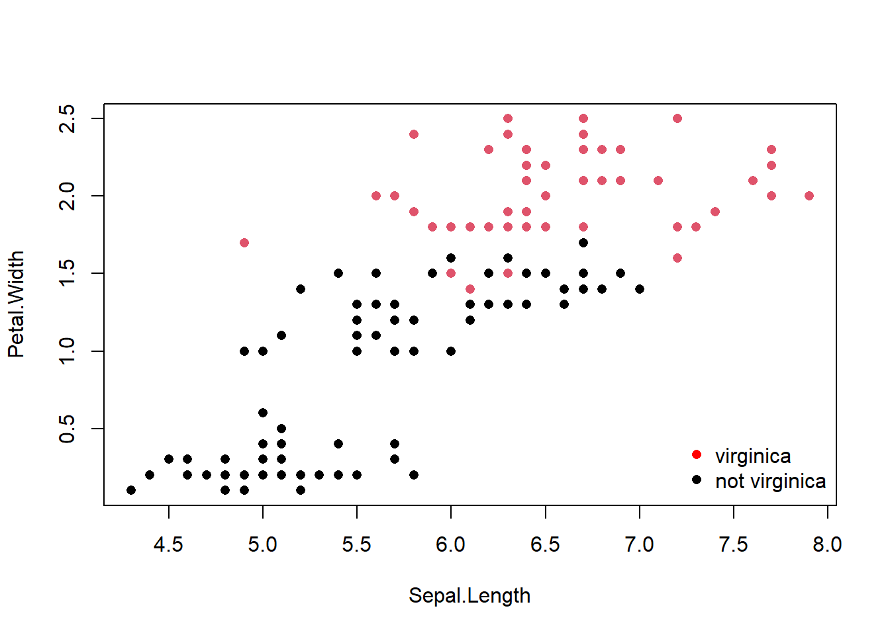
Model
A simple logistic regression model is fit to the data.
glm1 <- glm(label ~ ., data = iris2,family = 'binomial')
summary(glm1)##
## Call:
## glm(formula = label ~ ., family = "binomial", data = iris2)
##
## Deviance Residuals:
## Min 1Q Median 3Q Max
## -2.08560 -0.08211 -0.00012 0.01869 2.47786
##
## Coefficients:
## Estimate Std. Error z value Pr(>|z|)
## (Intercept) -22.8736 6.8160 -3.356 0.000791 ***
## Sepal.Length 0.3064 0.8375 0.366 0.714530
## Petal.Width 12.8447 2.8731 4.471 7.8e-06 ***
## ---
## Signif. codes: 0 '***' 0.001 '**' 0.01 '*' 0.05 '.' 0.1 ' ' 1
##
## (Dispersion parameter for binomial family taken to be 1)
##
## Null deviance: 190.954 on 149 degrees of freedom
## Residual deviance: 33.287 on 147 degrees of freedom
## AIC: 39.287
##
## Number of Fisher Scoring iterations: 9The resulting decision boundary is also plotted below. We are interested in learning how the uncertainty in prediction varies between the five points A, B, C ,D and E.
#Grid for getting predictions
grid <- expand.grid(Sepal.Length =seq(0,8,by=0.1),Petal.Width = seq(0,8,by=0.1))
grid_preds <- predict(glm1,newdata=grid,type='response')
contour(x=seq(0,8,by=0.1), y=seq(0,8,by=0.1), z=matrix(grid_preds,nrow =81),levels=0.5,
col="cornflowerblue",lwd=2,drawlabels=FALSE)
points(iris2[,1],iris2[,2],col=iris$label,pch = 16)
points(x = c(7,5,2,2,7), y = c(2,2,2,7,7),pch=4,cex =2)
text(x = c(7.25,5.25,2.25,2.25,7.25), y = c(2.25,2.25,2.25,7.25,7.25),
labels=c('A','B','C','D','E'))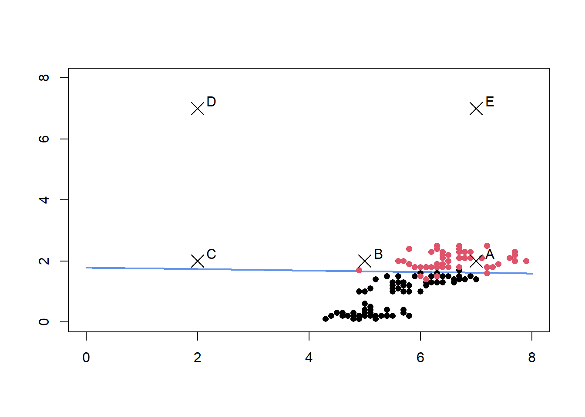
Frequentist Prediction Intervals
We create prediction intervals using the approach described here
newdata <- data.frame(Sepal.Length = c(7,5,2,2,7), Petal.Width = c(2,2,2,7,7))
preds <- predict(glm1,newdata=newdata,type='link',se.fit=TRUE)
#Calculate 95% prediction interval bounds
critval <- 1.96 ## approx 95% CI
upr <- preds$fit + (critval * preds$se.fit)
lwr <- preds$fit - (critval * preds$se.fit)
fit <- preds$fit
#These are logits, use inverse link function to get probabilties
fit2 <- glm1$family$linkinv(fit)
upr2 <- glm1$family$linkinv(upr)
lwr2 <- glm1$family$linkinv(lwr)
results <- data.frame(label=c('A','B','C','D','E'),mean = fit2,lb = lwr2,ub =upr2)
print(results)## label mean lb ub
## 1 A 0.9930371 0.91128970 0.9994952
## 2 B 0.9872256 0.75751893 0.9994772
## 3 C 0.9685803 0.01729603 0.9999815
## 4 D 1.0000000 1.00000000 1.0000000
## 5 E 1.0000000 1.00000000 1.0000000All 5 points are predicted to be virginica with a very high probability given they fall on one side of the decision boundary. However the width of the prediction intervals for these five points vary considerably. The points D and E are so far away from the decision boundary that there is little uncertainty in the predictions, the points A,B and C are more interesting.
library(ggplot2)
ggplot() + geom_errorbar(data=results,mapping=aes(x=label,ymin=lb,ymax=ub),
width =0.2,size=1,color='blue')+
geom_point(data=results,mapping = aes(x=label,y=mean),size=2,shape=21,fill='white')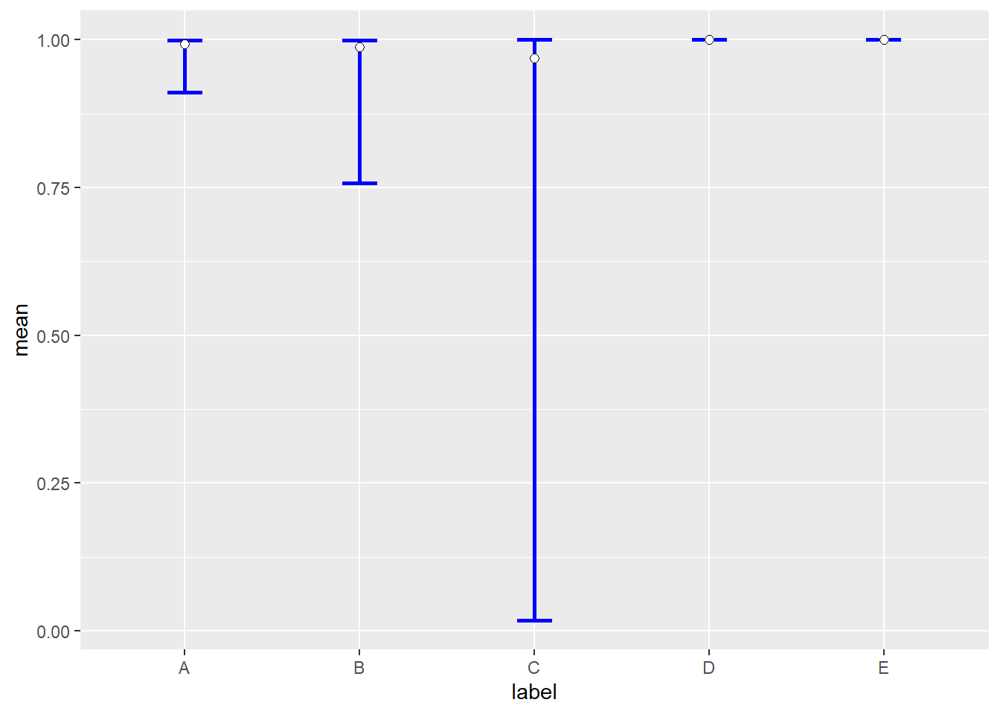
For point A, the model indicates fairly high confidence in its predictions, however for point C, the prediction interval indicates that model has very little confidence in the prediction although the point estimate is a high 0.96.
If the threshold for making a decision is 0.8, for a decision point corresponding to point C, a decision in the affirmative will be made even though the model has very little confidence in it’s prediction.
However, it is important to keep in mind that a frequentist 95% prediction interval only means that in the context of repeated trials, 95% of such prediction intervals will contain the true predicted value.Given this interpretation of the prediction interval, there are two ways this can be used.
Provide the prediction interval for each prediction for downstream analysis and review
Get the width of the prediction intervals for a grid of points and specify this is the optimal operating region for the model.
Below we identify the region where the width of the prediction interval is greater than 0.25
grid <- expand.grid(Sepal.Length =seq(0,8,by=0.1),Petal.Width = seq(0,8,by=0.1))
preds <- predict(glm1,newdata=grid,type='link',se.fit=TRUE)
#Calculate 95% prediction interval bounds
critval <- 1.96 ## approx 95% CI
upr <- preds$fit + (critval * preds$se.fit)
lwr <- preds$fit - (critval * preds$se.fit)
fit <- preds$fit
#These are logits, use inverse link function to get probabilties
fit2 <- glm1$family$linkinv(fit)
upr2 <- glm1$family$linkinv(upr)
lwr2 <- glm1$family$linkinv(lwr)
ci_width <- upr2 - lwr2
operating_region <- cbind(grid,ci_width)
operating_region$ci_flag <- ifelse(operating_region$ci_width < 0.25,1,0)
contour(x=seq(0,8,by=0.1), y=seq(0,8,by=0.1), z=matrix(operating_region$ci_flag,
nrow =81),levels=1,
col="green",lwd=2,drawlabels=TRUE)
points(iris2[,1],iris2[,2],col=iris$label,pch = 16)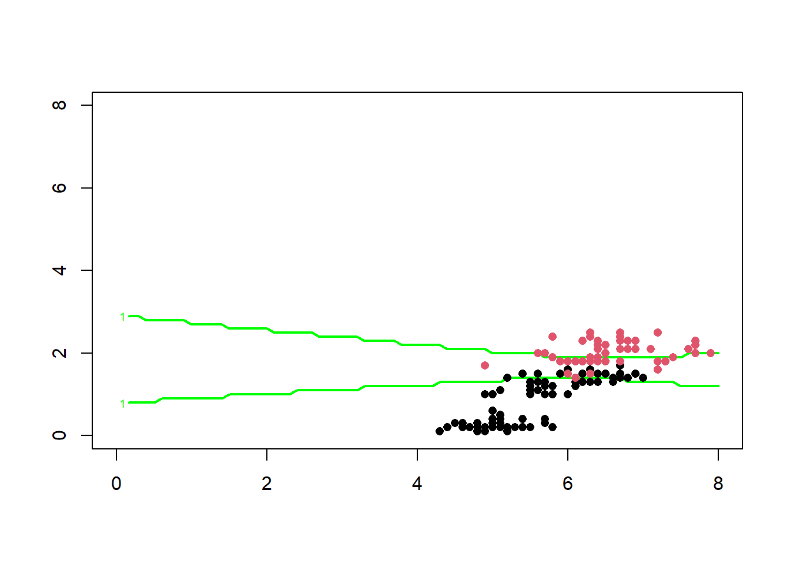
The region between the two green lines above represents the region where the model’s prediction does not have the required degree of confidence, this region represents the region where the model’s predictions should not be used for making decisions.
Bayesian Prediction Intervals
An alternative way to incorporate uncertainty is by using bayesian models.Bayesian prediction intervals have a probabilistic interpretation. If the 95% bayesian prediction interval for a new data point is between 0.75 and 0.85, it is justified in concluding that there there is a 95% probability that the true value is between 0.75 and 0.85 according to the model. This means instead of defining a score threshold for the model based on point estimates, we can define a score threshold using the prediction interval itself.
We can define the score threshold such that the entire 95% prediction interval should be greater that score threshold.
A bayesian logistic regression model is specified and fitted below.
library(rstan)
options(mc.cores = parallel::detectCores())
rstan_options(auto_write = TRUE)
library(rstanarm)
bayes_glm1 <- stan_glm(label ~ . , data = iris2,
family = binomial(link = "logit"),
prior = normal(0,25) , prior_intercept = normal(0,25),QR=TRUE)The 95% credible intervals on the model parameters are given by
posterior_interval(bayes_glm1,prob=0.95)## 2.5% 97.5%
## (Intercept) -39.151105 -12.370249
## Sepal.Length -1.390665 2.049905
## Petal.Width 8.636345 20.015803Model predictions on new data points are computed below
newdata <- data.frame(Sepal.Length = c(7,5,2,2,7), Petal.Width = c(2,2,2,7,7))
new_pred_means <- posterior_linpred(bayes_glm1,transform=TRUE,newdata=newdata)## Instead of posterior_linpred(..., transform=TRUE) please call posterior_epred(), which provides equivalent functionality.###Get 95 % credible intervals intervals
p_2.5 <- apply(new_pred_means,2,function(x){ quantile(x,0.025)})
p_97.5 <- apply(new_pred_means,2,function(x){ quantile(x,0.975)})
median <- apply(new_pred_means,2,function(x){ quantile(x,0.5)})
results <- data.frame(label=c('A','B','C','D','E'),median = median ,lb = p_2.5,ub=p_97.5)
print(results)## label median lb ub
## 1 A 0.9946407 0.95395165 0.9997456
## 2 B 0.9902417 0.83807582 0.9997677
## 3 C 0.9751805 0.01987324 0.9999941
## 4 D 1.0000000 1.00000000 1.0000000
## 5 E 1.0000000 1.00000000 1.0000000The bayesian prediction/credible intervals for the five points are shown below
library(ggplot2)
ggplot() + geom_errorbar(data=results,mapping=aes(x=label,ymin=lb,ymax=ub),
width =0.2,size=1,color='blue')+
geom_point(data=results,mapping = aes(x=label,y=median),size=2,shape=21,fill='white')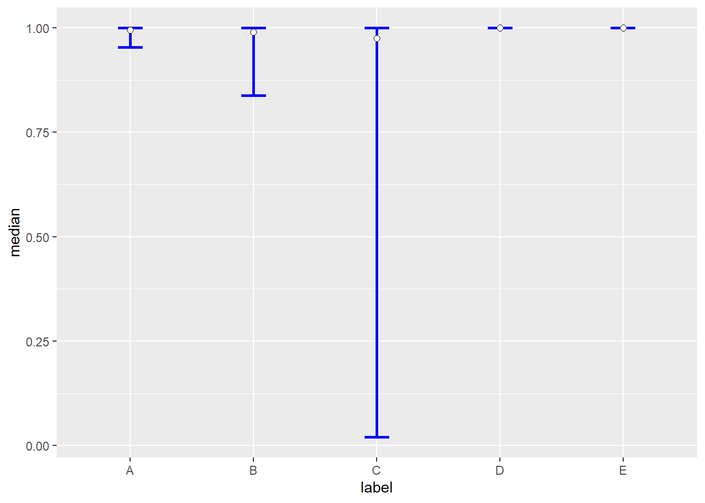
Using the posterior predictive distribution, the probability mass of the distribution exceeding some threshold can also be computed as shown below. Assume the threshold is 0.8
calc_prob <- function(v,t){
#Get no of prediction exceeding threshold
e <- sum(v>t);
return(e/length(v))
}
probs <- apply(new_pred_means,2,calc_prob,0.8)
names(probs) <- LETTERS[1:5]
print(probs)## A B C D E
## 1.00000 0.98200 0.72275 1.00000 1.00000This can allow us to set thresholds like,the posterior predictive distribution should have a probability mass of 0.5 exceeding the chosen threshold.
Bayesian Models for Imbalanced Datasets
Bayesian models can also be useful in rare event modelling by incorporating uncertainty resulting from the fact that a certain class is very rare into model estimates and predictions.
Consider the model built on the original data below which has a higher proportion of ‘negative’.
library(RKEEL)
imb_data <- read.keel(file = 'page-blocks0.dat')
imb_data[,c(1:10)] <- as.data.frame(lapply(imb_data[,c(1:10)],as.numeric))
imb_data <- na.omit(imb_data)
summary(imb_data$Class)## negative positive
## 4912 559A bayesian logistic regression model is built on this imbalanced data set. Only 2 features are used for simplicity.
library(rstanarm)
library(bayesplot)
bayes_glm2 <- stan_glm(Class ~ Height + P_black , data = imb_data,
family = binomial(link = "logit"),QR=TRUE)The 95% credible interval of the model coefficients are given below
posterior_interval(bayes_glm2,prob=0.95)## 2.5% 97.5%
## (Intercept) -5.61684669 -5.05640186
## Height 0.03593999 0.05116209
## P_black 5.57297983 6.49314443This is visualized below
posterior_ub <- as.array(bayes_glm2)
color_scheme_set("red")
mcmc_intervals(posterior_ub,prob = 0.95,pars = c('Height','P_black'))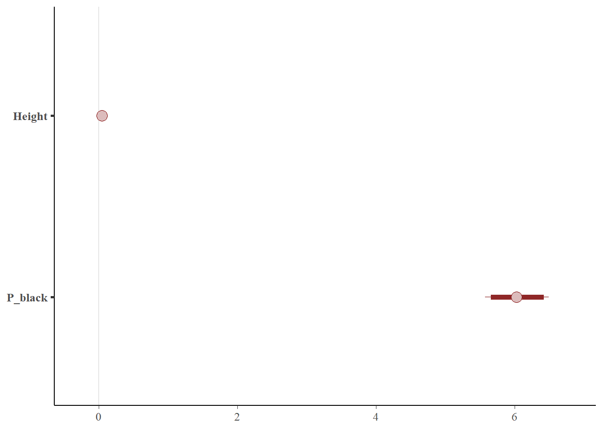
Now consider rebalanced dataset - using oversampling.
library(ROSE)
bal_data_over <- ovun.sample(Class~Height + P_black, data = imb_data,
p = 0.5 , seed = 1 , method = 'over')$data
summary(bal_data_over$Class)## negative positive
## 4912 4875The same model is now fit to this rebalanced data.
bayes_glm3 <- stan_glm(Class ~ Height + P_black , data = bal_data_over,
family = binomial(link = "logit"),QR=TRUE)The 95% credible interval of the model coefficients are given below
posterior_interval(bayes_glm3,prob=0.95)## 2.5% 97.5%
## (Intercept) -2.9301851 -2.67279134
## Height 0.0400952 0.04899063
## P_black 4.8666753 5.33718942This is visualized below
posterior_ub <- as.array(bayes_glm3)
color_scheme_set("red")
mcmc_intervals(posterior_ub,prob = 0.95,pars = c('Height','P_black'))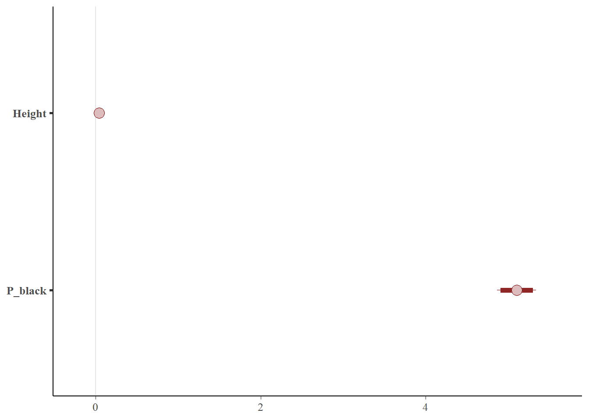
Also consider a dataset rebalanced by undersampling.
library(ROSE)
bal_data_under <- ovun.sample(Class~Height + P_black, data = imb_data,
p = 0.5 , seed = 1 , method = 'under')$data
summary(bal_data_under$Class)## negative positive
## 539 559The same model is now fit to this rebalanced data.
bayes_glm4 <- stan_glm(Class ~ Height + P_black , data = bal_data_under,
family = binomial(link = "logit"),QR=TRUE)The 95% credible interval of the model coefficients are given below
posterior_interval(bayes_glm4,prob=0.95)## 2.5% 97.5%
## (Intercept) -3.49022006 -2.63906206
## Height 0.04146041 0.07188549
## P_black 4.89423139 6.48174478This is visualized below
posterior_bal <- as.array(bayes_glm4)
color_scheme_set("red")
mcmc_intervals(posterior_bal,prob = 0.95,pars = c('Height','P_black'))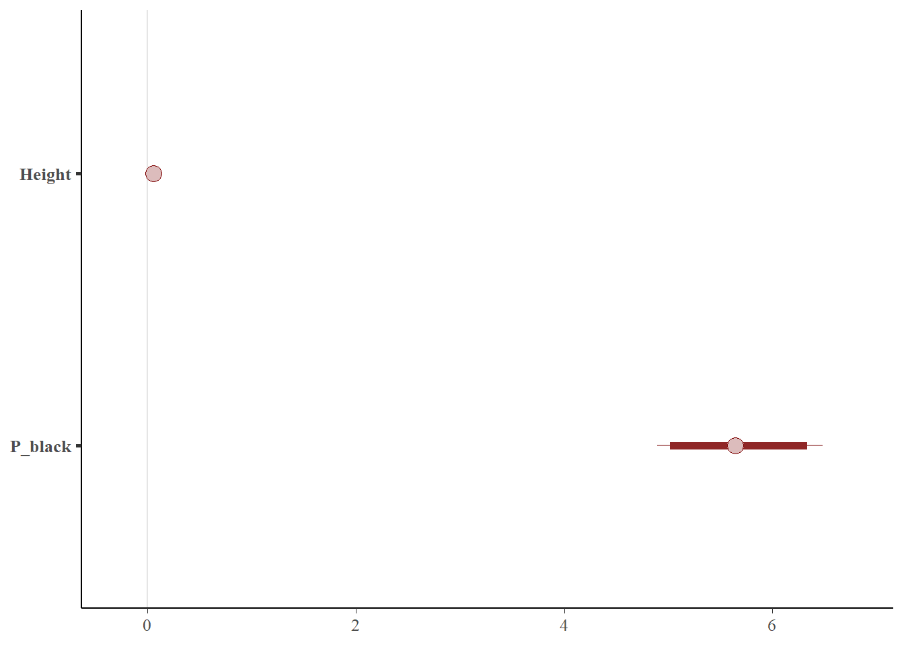
It can be seen from the figure above that the width of the credible interval has has actually expanded when using this dataset that has been re-balanced by undersampling.
Now consider the prediction on a new data point from each of these three models.
newdata <- data.frame(Height = c(110), P_black = c(750))
pred_imb <- posterior_linpred(bayes_glm2,transform=TRUE,newdata=newdata)## Instead of posterior_linpred(..., transform=TRUE) please call posterior_epred(), which provides equivalent functionality.pred_over <- posterior_linpred(bayes_glm3,transform=TRUE,newdata=newdata)## Instead of posterior_linpred(..., transform=TRUE) please call posterior_epred(), which provides equivalent functionality.pred_under <- posterior_linpred(bayes_glm4,transform=TRUE,newdata=newdata)## Instead of posterior_linpred(..., transform=TRUE) please call posterior_epred(), which provides equivalent functionality.preds_all <- cbind(pred_imb,pred_over,pred_under)
###Get 95 % credible intervals intervals
p_2.5 <- apply(preds_all,2,function(x){ quantile(x,0.025)})
p_97.5 <- apply(preds_all,2,function(x){ quantile(x,0.975)})
median <- apply(preds_all,2,function(x){ quantile(x,0.5)})
pred_intervals <- data.frame(cbind(p_2.5,p_97.5,median))
pred_intervals$data <- c('imbalanced','over sampled','under sampled')
ggplot() + geom_errorbar(data=pred_intervals,mapping=aes(x=data,ymin=p_2.5,ymax=p_97.5),
width =0.2,size=1,color='blue')+
geom_point(data=pred_intervals,mapping=aes(x=data,y=median),size=2,
shape=21,fill='white')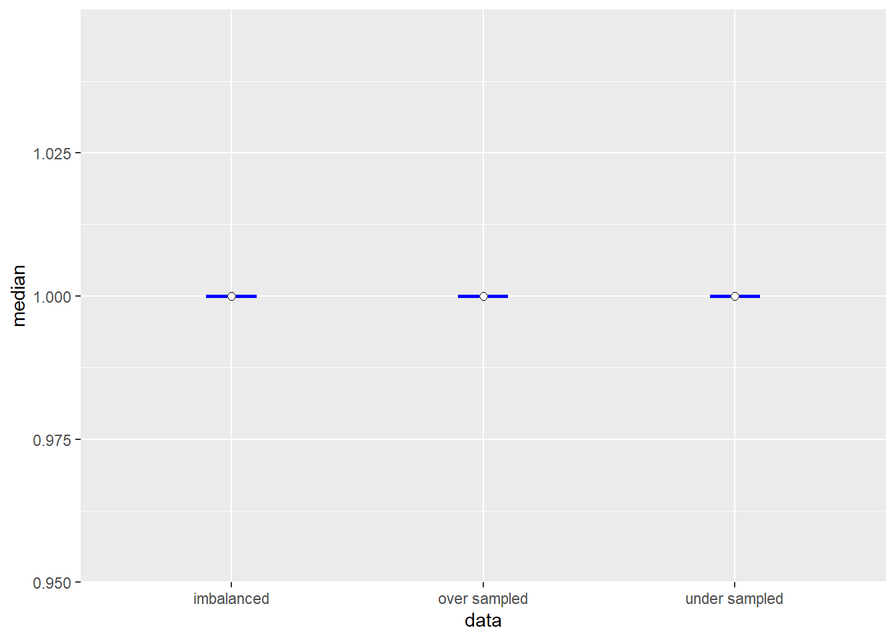
As seen above the width of the prediction interval resulting from using training data with different volumes of the target class is different. The main takeaway is that while building models on rare event data, the fact that the rare incidence of a class leads to greater prediction uncertainty needs to be considered.
Use Cases
1) Making a binary(yes/no) decision by comparing a score against a threshold.
Almost all model predictions and subsequent actions are typically taken when a model’s prediction exceeds a threshold.
Consider the ‘ML scenario’ use case, here the score generated by the model will be compared against a threshold. An alert is generated only if the score exceeds a threshold.
Assume the optimal score threshold for the model is 0.6.
Consider an ML scenario event where the predicted score is (0.58), assume this is the mode of the posterior predictive distribution. Two completely different distributions can yield the same point prediction as shown below.
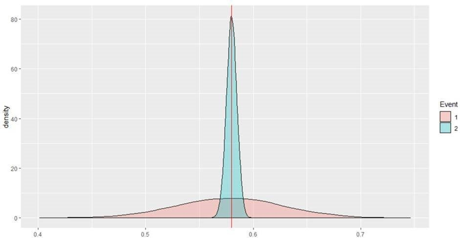
Neither of these ML events will lead to alerts but the first event should be escalated to an alert given the much larger uncertainty associated with the prediction and the high cost of false negatives. The probability mass exceeding the threshold of 0.6 for event 1 is ~ 0.33 whereas this probability mass is 0 for event 2.
2) Rank Ordering Events
In many applications the model’s predictions are used to rank items. In fraud, analysts have only a limited time and budget to review fraud cases, so the cases are reviewed from the top-down until the available budget is exhausted.
Also, consider the event scoring use case in AML. The model is used to rank order events with the higher ranked events being worked first. Here there is no risk of incurring false negatives as all events will be eventually worked in the assigned order. So here the priority is to reduce the risk of false positives i.e. minimize the possibility of working an unproductive alert first.
Consider two events with a predicted score of 0.6 (Event 1) and 0.58 (Event 2) respectively but with the following posterior predictive distributions.
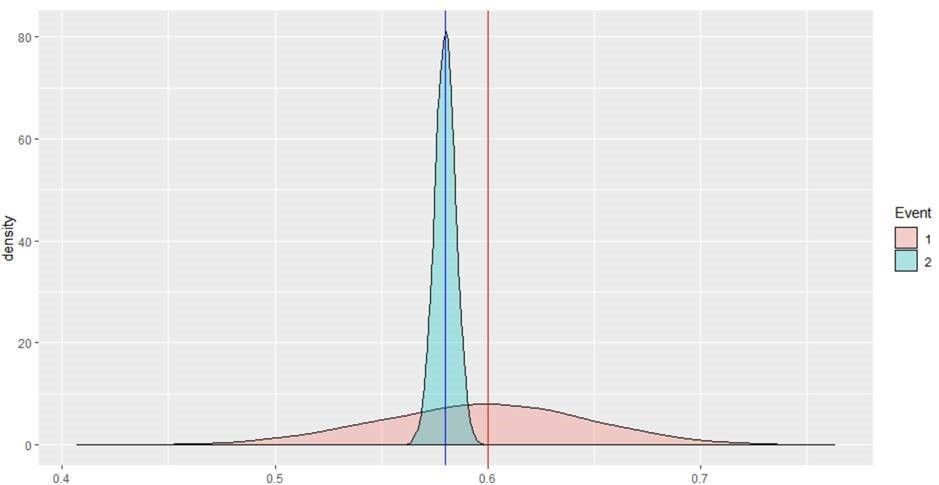
Let the baseline be the proportion of ‘effective events’ in your data set , assume it is 0.5 here. In this case we would want to review ‘event 2’ first because it has a predicted probability score greater than the baseline with much higher certainty. A couple of metrics that can potentially be used to prioritize events
M1 : (Probability Score - baseline)/S.D. of distribution M2 : Probability mass exceeding your baseline (0.5 here)
first metric (M1), the scores for the two events will be:
E1: 2.07
E2: 16.17
Using the second metric (M2) the score will be:
E1: 0.9784
E2: 1
In both cases , event E2 will be ranked over event E1.
3) Higher Risk Tolerance
There may be certain models that are used to detect events/activity that are considered low risk to the bank or might be considered so by institutions with a higher risk tolerance. In such cases, an institution might want to escalate an event/activity only if the model has high confidence in its predictions.
Such institutions will chose to escalate an event only if the 95% credible interval of the posterior predictive distribution entirely exceeds the chosen threshold.
This may also be an option for models which are observed to exhibit an unacceptably high False Positive Ratio.